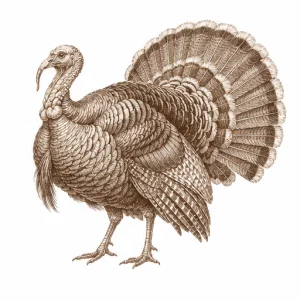
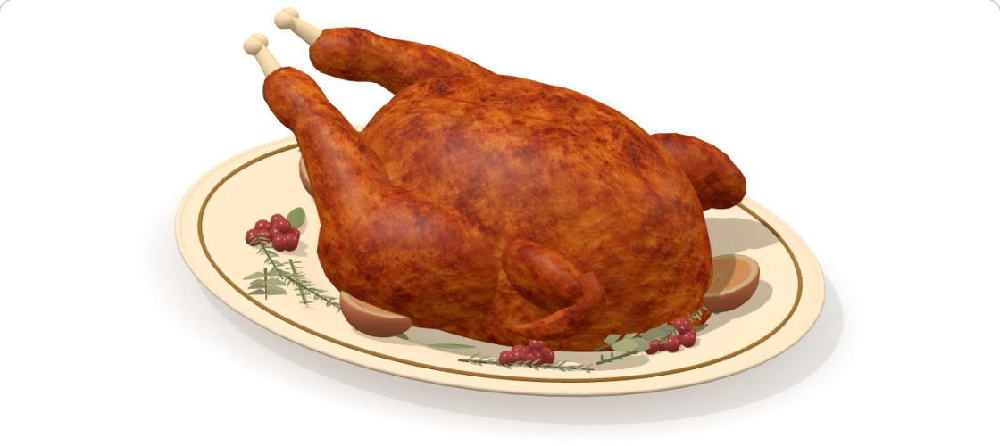

Thanksgiving Turkey Slices Guide
Pull the 3D bird apart, or pick from the cut index, to compare white meat, dark meat, and stock bones for dinner and leftovers.


3D platter
Drag outside the bird to
turn
Pull or tap a piece for notes. Remove all four meat cuts to lift
the carcass.
Serving guide